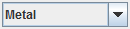
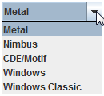

Look & Feel
At the
bottom
of Colory you find the combo box to change the Look & Feel.

You can change the Look & Feel by selecting a listed item. All Look & Feel types supported by the system are shown by the combo box. The following is just an example:

See also:
General information about 'Colory'
 See also:
See also: